대전 동구 낭월동 남대전 이편한세상아파트 33평 리모델링｜욕실 2곳·도배·장판·현관 중문·한샘 붙박이장

현장 작업 한눈에 보기
- 현장
- 남대전 이편한세상아파트 33평 · 욕실 2곳·현관·거실·주방·안방
- 문제
- 안방 욕실 욕조를 걷어 내고 샤워 공간으로 쓰고 싶음
현관·거실·주방·안방 수납까지 한 번에 손보기 - 작업
- 안방 욕실 욕조 철거 · 아쿠아 유리 파티션 · 욕실 온풍기(휴젠트)
거실 욕실 타일·세면대·거울장·파티션 · 도배 · 장판 · 전등
현관 3연동 중문(샤틴 유리)·바닥 타일·신발장 래핑 · 거실 아트월 600×1200 타일 · 주방 한샘 키친장 · 안방 한샘 붙박이장 - 결과
- 공간마다 작업 전·뒤 사진으로 확인
공사 기간·금액은 적지 않음
대전 동구 낭월동 남대전 이편한세상아파트 33평 집의 리모델링입니다. 안방 욕실은 욕조를 걷어 내고 아쿠아(물결 무늬) 유리 파티션으로 샤워 공간을 만들었고, 거실 욕실과 도배·장판·전등, 현관 중문·거실 아트월·주방 한샘 키친장·안방 한샘 붙박이장까지 함께 바꿨습니다.
1. 작업 전 안방 — 예전 붙박이장
대전 동구 낭월동 남대전 이편한세상아파트 33평 집입니다. 욕실 두 곳과 현관·거실·주방·안방을 손보고 도배·장판·전등도 함께 새로 했습니다. 먼저 안방입니다. 작업 전에는 흰색 여닫이 붙박이장과 화장대 자리가 있었고 바닥은 진한 나무색이었습니다.
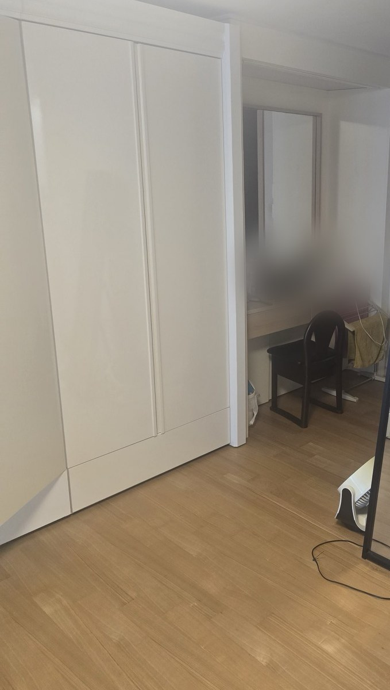
2. 작업 뒤 안방 — 한샘 붙박이장
안방 벽 한 면에 한샘 붙박이장을 들였습니다. 손잡이가 드러나지 않는 흰색 문 일곱 짝이 벽을 채우고, 오른쪽 화장대 자리는 그대로 이어집니다. 바닥은 밝은 색 장판으로 바꾸고 벽은 새로 도배했으며, 천장 등도 새것입니다.
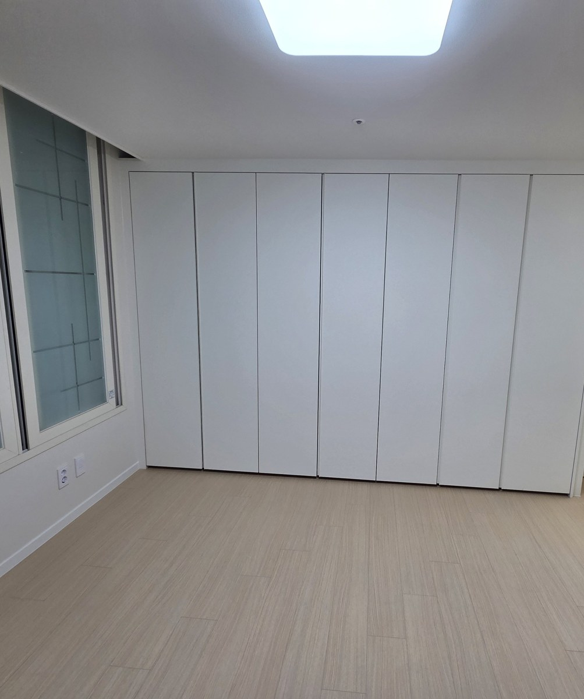
3. 작업 전 안방 욕실 — 욕조
안방 욕실에는 욕조와 반다리 세면대가 있었습니다. 의뢰 내용은 욕조를 걷어 내고 샤워 공간으로 바꾸는 것이었습니다.
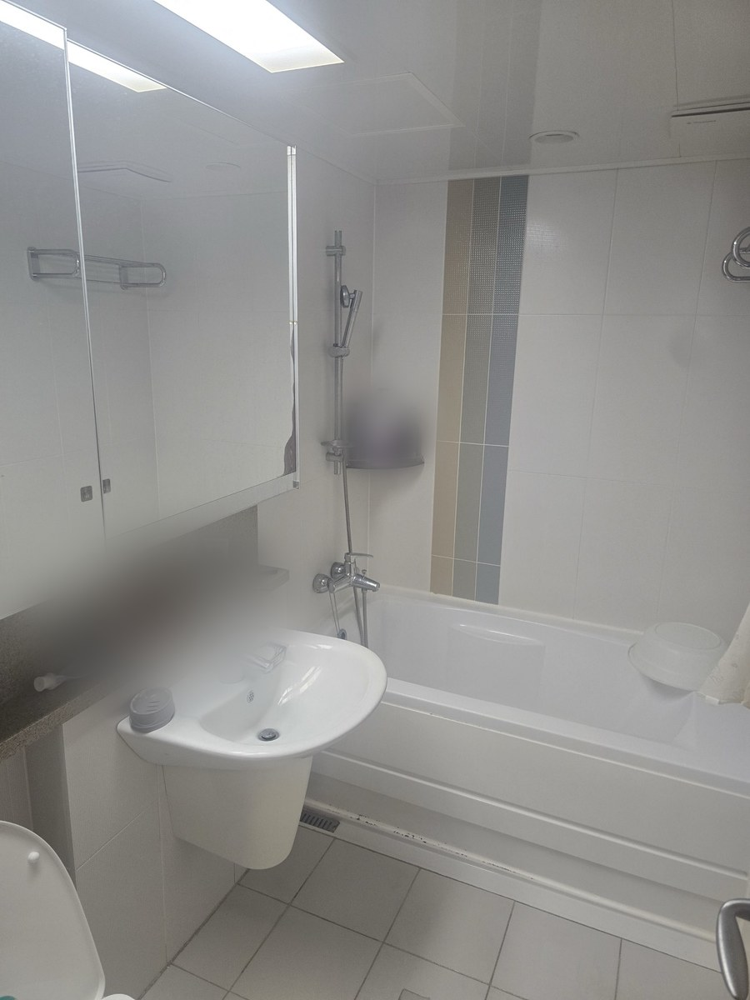
4. 작업 뒤 안방 욕실 — 욕조 자리에 유리 파티션
욕조를 철거한 자리를 샤워 공간으로 쓰고, 물결 무늬가 있는 아쿠아 유리 파티션을 세워 샤워 자리를 나눴습니다. 벽과 바닥은 밝은 회색 타일로 바뀌었고, 벽걸이 세면대 위로 긴 선반과 아래 조명이 들어간 거울장이 보입니다.
5. 안방 욕실 천장 — 욕실 온풍기
천장에는 욕실 온풍기(휴젠트)를 달았습니다. 동그란 매입등 두 개도 보입니다.
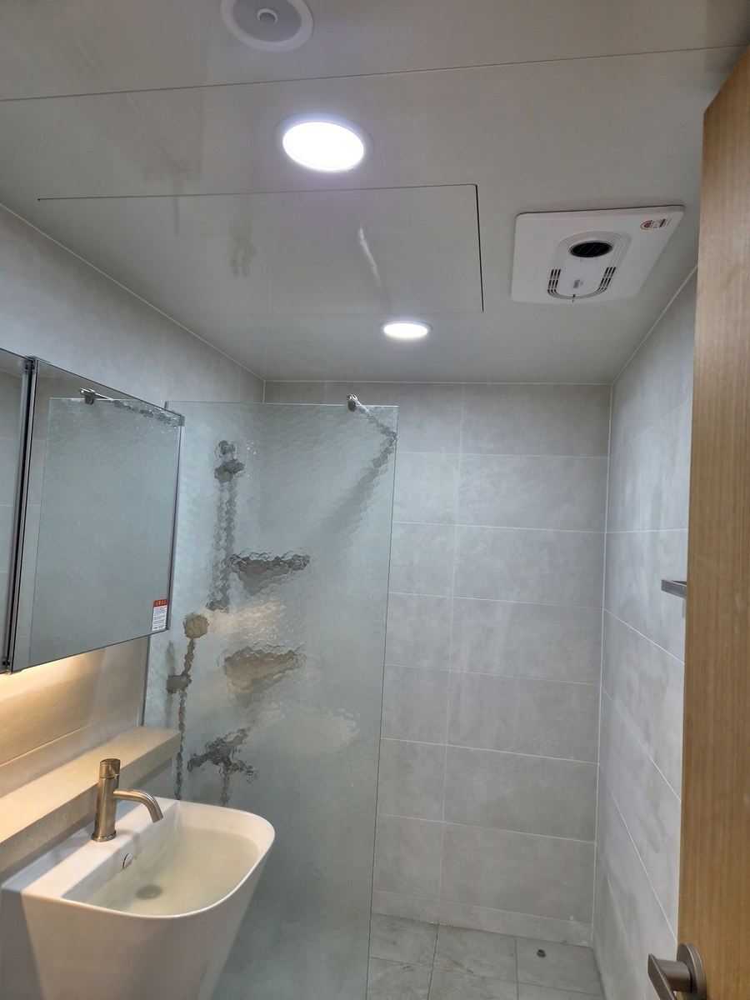
6. 작업 전 거실 욕실
거실 쪽 욕실입니다. 작업 전에는 유리 샤워 부스와 반다리 세면대가 있었습니다.
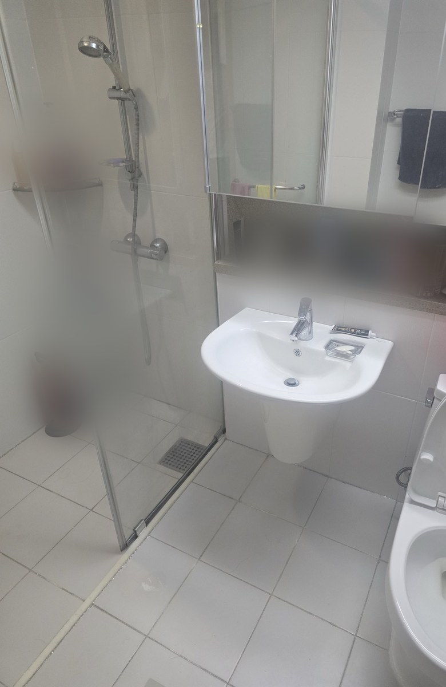
7. 작업 뒤 거실 욕실
작업 뒤 거실 욕실입니다. 6번 사진과 비교하면 흰 벽·바닥 타일이 밝은 회색 타일로 바뀌었고, 세면대 뒤 벽에는 가로 줄무늬 타일을 넣었습니다. 반다리 세면대 자리에는 벽걸이 세면대와 새 수전을, 밀어서 여는 거울 수납장 자리에는 아래 조명이 들어간 거울장을 달았고 선반 상판도 밝은 색으로 바뀌었습니다. 여닫는 샤워 부스 대신 유리 파티션을 세웠고, 변기도 새것으로 바꿨습니다(사진은 비닐을 벗기기 전).
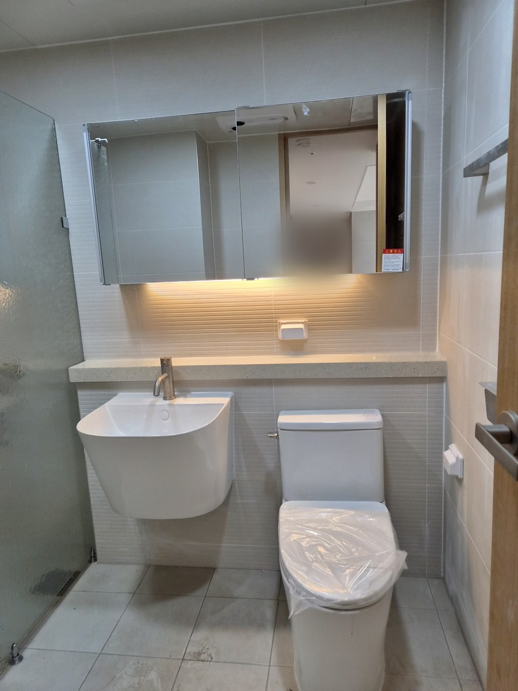
8. 작업 전 주방 냉장고장
주방입니다. 작업 전에는 오븐·전자레인지 칸과 냉장고 자리가 있는 키큰장이 있었습니다.
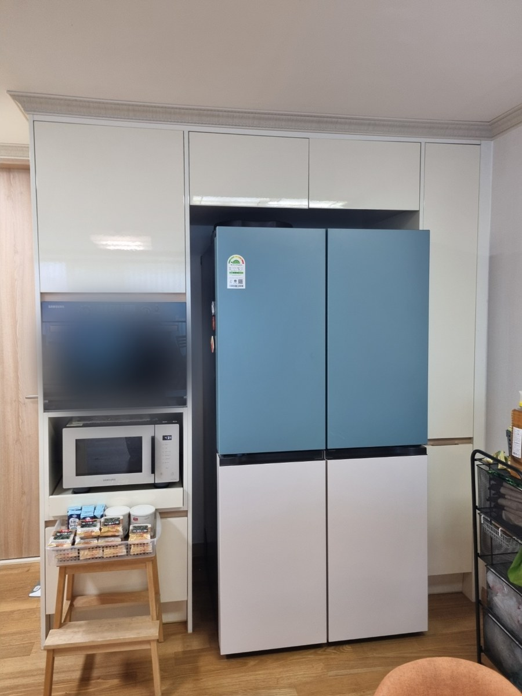
9. 작업 뒤 주방 — 한샘 키친장
8번 사진의 냉장고장 자리에 한샘 키친장을 새로 들였습니다. 가운데 냉장고 자리 위로 수납장 두 칸, 오른쪽에 키큰장이 있고 냉장고 자리 벽에는 콘센트를 따로 두었습니다.
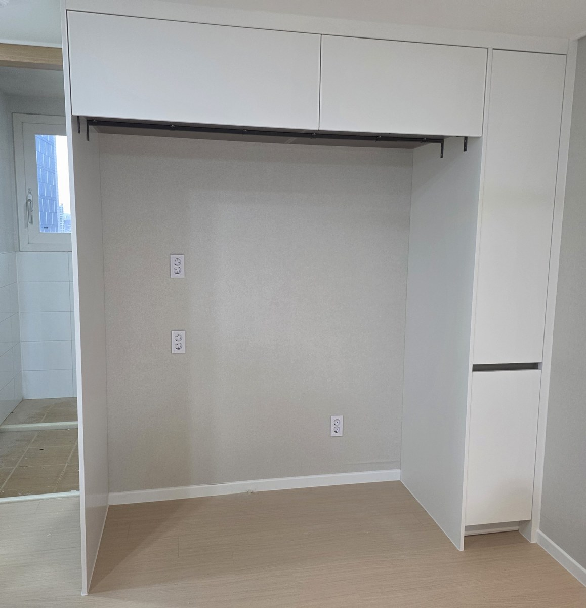
10. 거실 — 600×1200 타일 아트월·도배·장판·전등
거실 한쪽 벽은 600×1200 크기의 큰 타일로 아트월을 만들었습니다. 큰 타일이라 벽에 보이는 줄눈 선이 적습니다. 거실도 도배와 장판을 새로 하고 천장 등을 바꿨습니다.
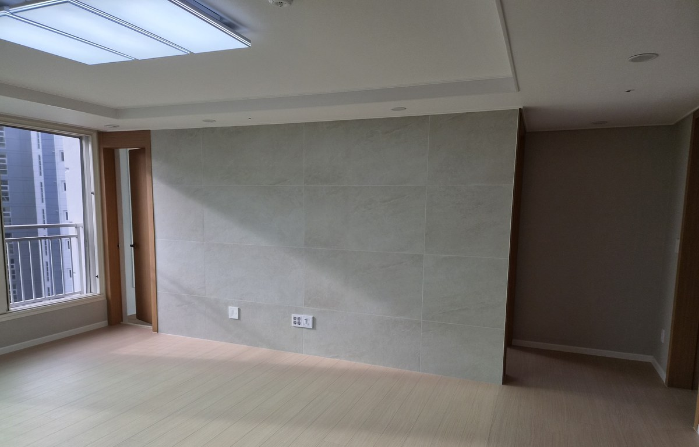
11. 현관 중문 — 3연동 슬림 중문
현관에는 문 세 짝이 함께 밀리는 3연동 슬림 중문을 달았습니다. 유리는 안이 비치지 않는 샤틴(반투명) 유리입니다.
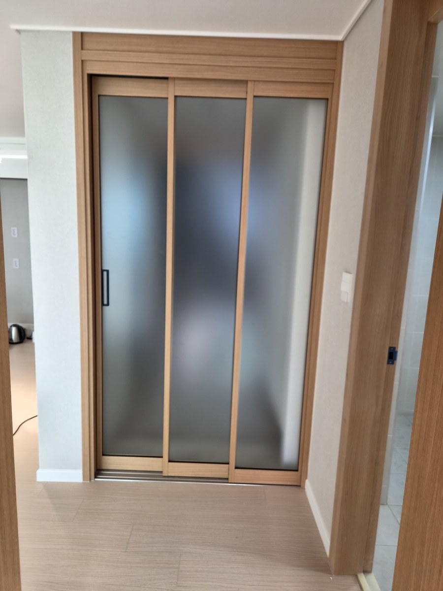
12. 현관 — 바닥 타일·신발장 래핑
현관 바닥은 타일로 새로 깔고, 신발장은 래핑으로 마감했습니다.
욕실·수납·현관처럼 여러 곳을 함께 바꿀 때는 공정 순서와 범위를 먼저 정해 두면 일정을 잡기 쉽습니다.
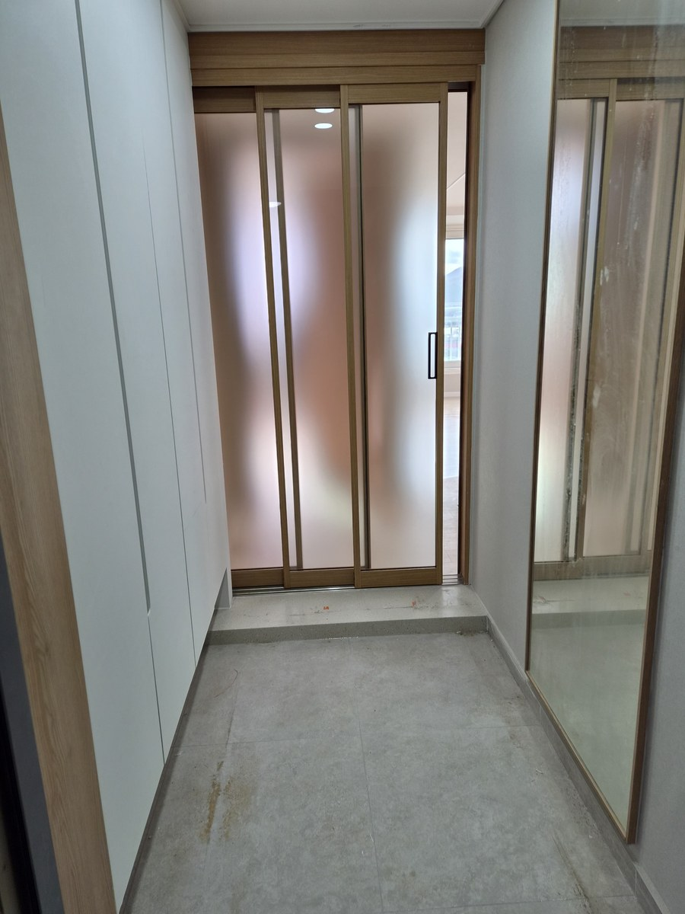